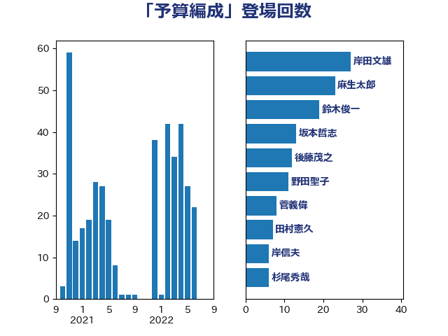

単語「予算編成」

| 岸田文雄 | 自由民主党 | 27 回 |
| 麻生太郎 | 自由民主党 | 23 回 |
| 鈴木俊一 | 自由民主党 | 19 回 |
| 坂本哲志 | 自由民主党 | 13 回 |
| 後藤茂之 | 自由民主党 | 12 回 |
| 野田聖子 | 自由民主党 | 11 回 |
| 菅義偉 | 自由民主党 | 8 回 |
| 田村憲久 | 自由民主党 | 7 回 |
| 岸信夫 | 自由民主党 | 6 回 |
| 杉尾秀哉 | 立憲民主党 | 6 回 |
| 蓮舫 | 立憲民主党 | 6 回 |
| 田村まみ | 国民民主党 | 5 回 |
| 渡辺周 | 立憲民主党 | 4 回 |
| 西村康稔 | 自由民主党 | 4 回 |
| 今井絵理子 | 自由民主党 | 3 回 |
| 古賀之士 | 立憲民主党 | 3 回 |
| 浮島智子 | 公明党 | 3 回 |
| 秋野公造 | 公明党 | 3 回 |
| 西田実仁 | 公明党 | 3 回 |
| 西銘恒三郎 | 自由民主党 | 3 回 |
| 下村博文 | 自由民主党 | 2 回 |
| 中西健治 | 自由民主党 | 2 回 |
| 井上貴博 | 自由民主党 | 2 回 |
| 伊藤岳 | 日本共産党 | 2 回 |
| 伊藤渉 | 公明党 | 2 回 |
| 前原誠司 | 国民民主党 | 2 回 |
| 吉良よし子 | 日本共産党 | 2 回 |
| 大塚耕平 | 国民民主党 | 2 回 |
| 安江伸夫 | 公明党 | 2 回 |
| 宮本徹 | 日本共産党 | 2 回 |
| 小林鷹之 | 自由民主党 | 2 回 |
| 小沼巧 | 立憲民主党 | 2 回 |
| 山岸一生 | 立憲民主党 | 2 回 |
| 枝野幸男 | 立憲民主党 | 2 回 |
| 牧山ひろえ | 立憲民主党 | 2 回 |
| 田村智子 | 日本共産党 | 2 回 |
| 石垣のりこ | 立憲民主党 | 2 回 |
| 礒崎哲史 | 国民民主党 | 2 回 |
| 藤川政人 | 自由民主党 | 2 回 |
| 赤羽一嘉 | 公明党 | 2 回 |
| 音喜多駿 | 日本維新の会 | 2 回 |
| おおつき紅葉 | 立憲民主党 | 1 回 |
| こやり隆史 | 自由民主党 | 1 回 |
| 上野通子 | 自由民主党 | 1 回 |
| 中谷真一 | 自由民主党 | 1 回 |
| 佐藤英道 | 公明党 | 1 回 |
| 務台俊介 | 自由民主党 | 1 回 |
| 勝部賢志 | 立憲民主党 | 1 回 |
| 古川禎久 | 自由民主党 | 1 回 |
| 古賀友一郎 | 自由民主党 | 1 回 |
| 吉川元 | 立憲民主党 | 1 回 |
| 吉田とも代 | 日本維新の会 | 1 回 |
| 吉田忠智 | 立憲民主党 | 1 回 |
| 吉良州司 | 無所属 | 1 回 |
| 堀井巌 | 自由民主党 | 1 回 |
| 塩川鉄也 | 日本共産党 | 1 回 |
| 大家敏志 | 自由民主党 | 1 回 |
| 大西健介 | 立憲民主党 | 1 回 |
| 室井邦彦 | 日本維新の会 | 1 回 |
| 宮本岳志 | 日本共産党 | 1 回 |
| 小宮山泰子 | 立憲民主党 | 1 回 |
| 山本博司 | 公明党 | 1 回 |
| 山本順三 | 自由民主党 | 1 回 |
| 川合孝典 | 国民民主党 | 1 回 |
| 斎藤嘉隆 | 立憲民主党 | 1 回 |
| 有村治子 | 自由民主党 | 1 回 |
| 朝日健太郎 | 自由民主党 | 1 回 |
| 末松信介 | 自由民主党 | 1 回 |
| 杉久武 | 公明党 | 1 回 |
| 東徹 | 日本維新の会 | 1 回 |
| 柴田巧 | 日本維新の会 | 1 回 |
| 森山浩行 | 立憲民主党 | 1 回 |
| 森本真治 | 立憲民主党 | 1 回 |
| 橋本岳 | 自由民主党 | 1 回 |
| 櫻井周 | 立憲民主党 | 1 回 |
| 武田良太 | 自由民主党 | 1 回 |
| 浅田均 | 日本維新の会 | 1 回 |
| 浜口誠 | 国民民主党 | 1 回 |
| 海江田万里 | 立憲民主党 | 1 回 |
| 源馬謙太郎 | 立憲民主党 | 1 回 |
| 田島麻衣子 | 立憲民主党 | 1 回 |
| 田村貴昭 | 日本共産党 | 1 回 |
| 田畑裕明 | 自由民主党 | 1 回 |
| 石井苗子 | 日本維新の会 | 1 回 |
| 石川博崇 | 公明党 | 1 回 |
| 笠井亮 | 日本共産党 | 1 回 |
| 笠浩史 | 無所属 | 1 回 |
| 舞立昇治 | 自由民主党 | 1 回 |
| 舩後靖彦 | れいわ新選組 | 1 回 |
| 芳賀道也 | 国民民主党 | 1 回 |
| 萩生田光一 | 自由民主党 | 1 回 |
| 西岡秀子 | 国民民主党 | 1 回 |
| 赤池誠章 | 自由民主党 | 1 回 |
| 足立康史 | 日本維新の会 | 1 回 |
| 逢坂誠二 | 立憲民主党 | 1 回 |
| 重徳和彦 | 立憲民主党 | 1 回 |
| 野村哲郎 | 自由民主党 | 1 回 |
| 金子恭之 | 自由民主党 | 1 回 |
| 青山大人 | 立憲民主党 | 1 回 |
| 鬼木誠 | 立憲民主党 | 1 回 |